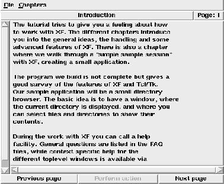

XFtutorial allows to interactively introduce a user to the usage of a Tcl/Tk program. The developer writes a tutorial script, leading the user through the functionality of the program. This program is part of the XF
distribution, and is used to introduce the user into the handling of XF .

Figure: The xftutorial program
The menubutton (File) contains an item to print the current help page, and to quit the program. The menubutton (Chapters) contains all chapters that are available. The text area displays the current help text. Below this area, there are three buttons that control the paging of the tutorial. Tutorial pages can have actions attached to them, which are performed when the next page is selected, or the Perform action button is pressed.